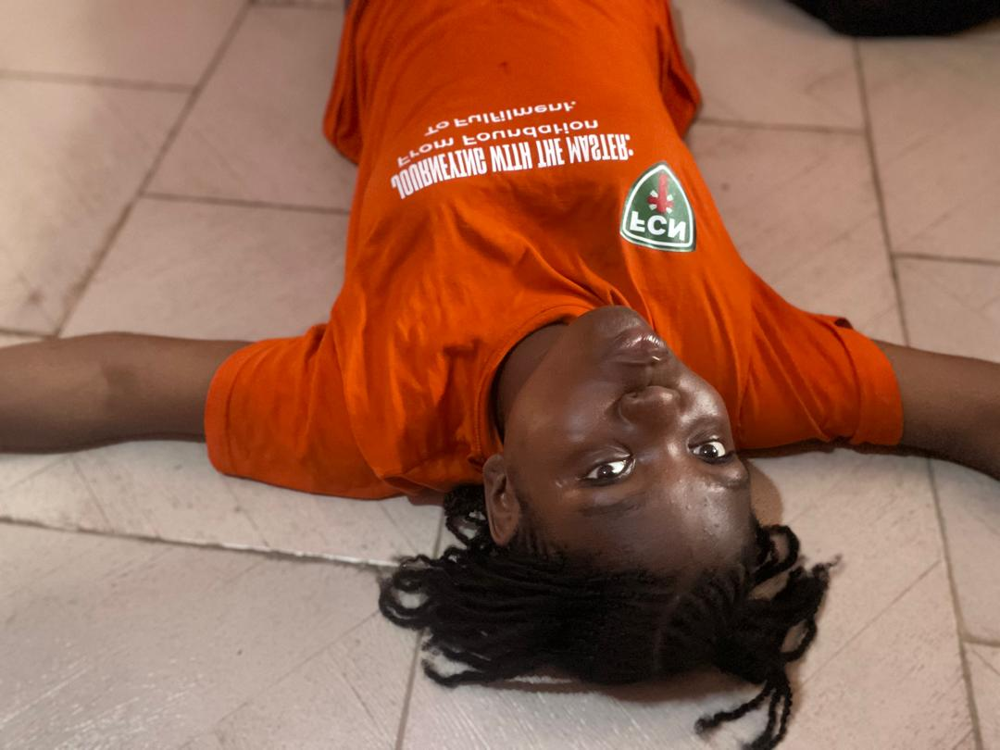
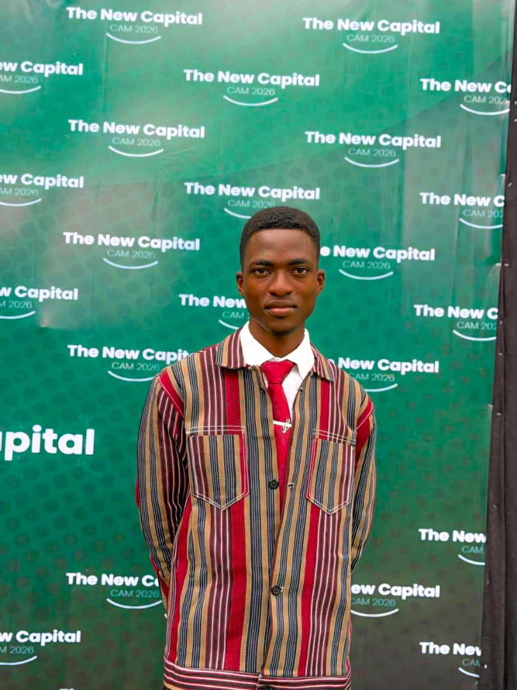
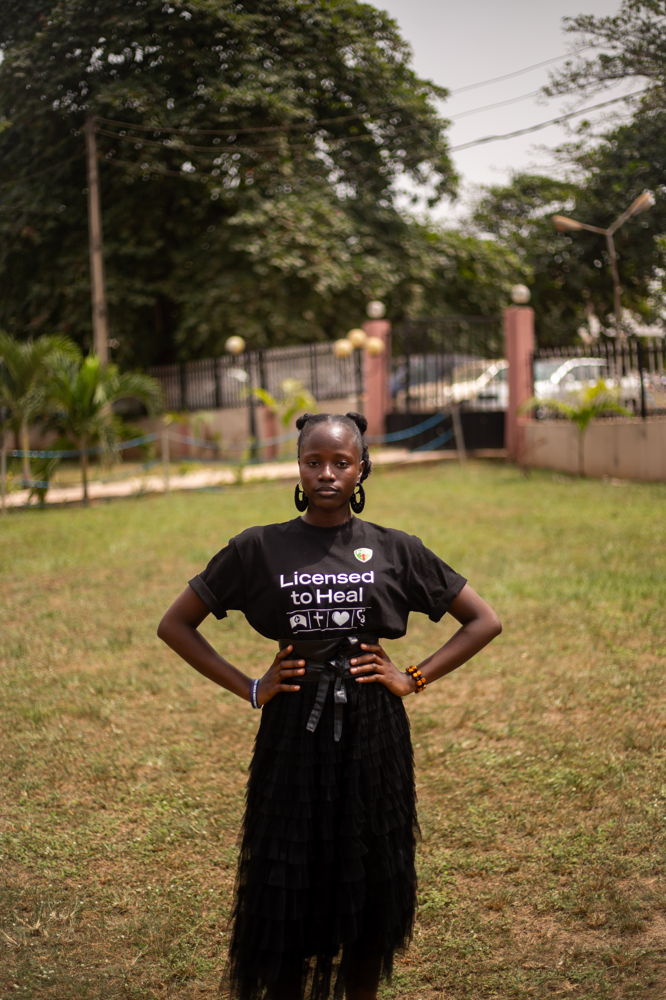

Caring for the Total Man.
Spirit. Soul. Body. Raising a generation of nurses who embody Christ in healthcare and beyond.
More than a fellowship,
A calling to serve.
The Fellowship of Christian Nurses, OAUTHC Chapter, is a community of nursing students united by a shared commitment to Christ, clinical excellence, and compassionate service.
We believe nursing is more than clinical knowledge and technical skill. It is a calling to care for the whole person: spirit, soul, and body, reflecting the love of Christ in every life we touch.
Through prayer, Bible study, fellowship, we help one another grow spiritually, develop professionally, and become nurses whose lives reflect the heart of Christ, both within and beyond the hospital walls. In prayer, we seek God together for our studies, our patients, and our future in nursing. In the Word, we ground our lives and our practice in the truth of Scripture. In fellowship, we build lasting friendships and support one another through the demands of nursing school.
Our purpose is to raise nurses who are not only skilled and knowledgeable, but also compassionate, ethical, and rooted in faith, people who serve patients with dignity, patience, and love. Whether you are just beginning your nursing journey or preparing to graduate, there is a place for you here. Come as you are, grow with us, and let your light shine wherever you serve.
Guided by faith. Driven by purpose.
Our Vision
To raise a generation of Christ-centred nurses who demonstrate spiritual maturity, professional excellence, and compassionate care, transforming lives and influencing healthcare through the love of Christ.
Our Mission
To nurture the spiritual lives of nursing students through prayer, the study of God's Word, discipleship, and fellowship, while encouraging academic excellence, professional development, and Christlike service to humanity.
Meet the executives.

Ayegbusi Precious
President & Sister's Coordinator 1

Akinbobola Treasure
Vice President & Evangelism Coordinator 2
Asolo Ayomide
General Secretary 1 & Academic Coordinator 1
Akinsuyi Oluwanifemi
General Secretary 2 & Library Coordinator
Oyeniyi Dorcas
Prayer Coordinator 1
Fadeyibi Boluwatife
Prayer Coordinator 2 & Academic Coordinator 2
Eluwade Heritage
Bible Study Coordinator 1
Oladunjoye Victoria
Bible Study Coordinator 2 & Sister's Coordinator 2

Samuel Timileyin
Choir Coordinator 1 & Brother's Coordinator 1
Popoola Ifeoluwa
Choir coordinator 2

Bamidele Omolola
Drama Coordinator 1
Fadoyin Deborah.
Media & Organizing Coordinator 1
Mojeed Florence
Drama Coordinator 2 & Media Coordinator 2
Oluwashola Temitope
Media Coordinator 3
Moses Dorcas
Evangelism Coordinator 1
Olowookere Oluwatofunmi
Welfare coordinator1
Olatunji Praise
Welfare coordinator 2
Samuel Ifeoluwa
Class pastor 200 level
Olajide Oluwanifemi
Class pastor 300 level & Treasurer
Ogunleye Abimbola
Class pastor 400 level
Ayodele Oluwakorede
Library Coordinator2
Adeyemi Might
Treasurer 1
Onome Sarah
Ushering coordinator 2
There's a place for you here.
Be part of a community growing in faith, purpose and service.